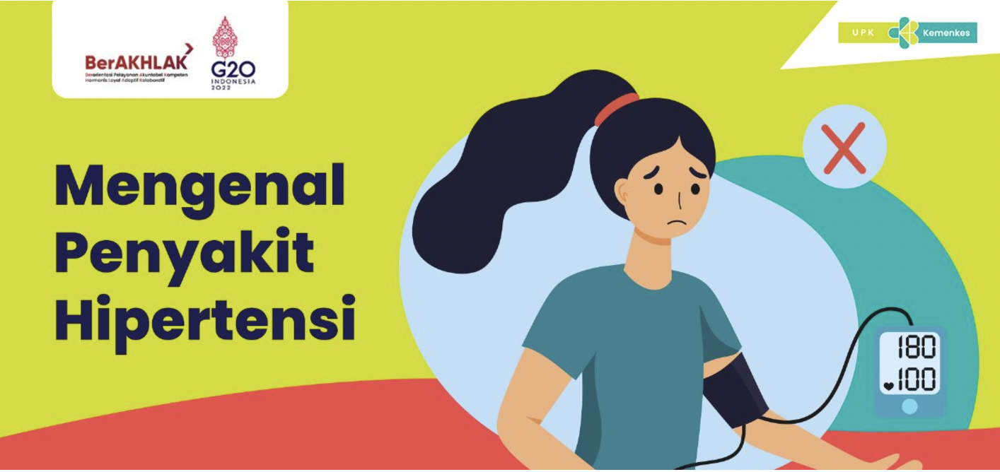
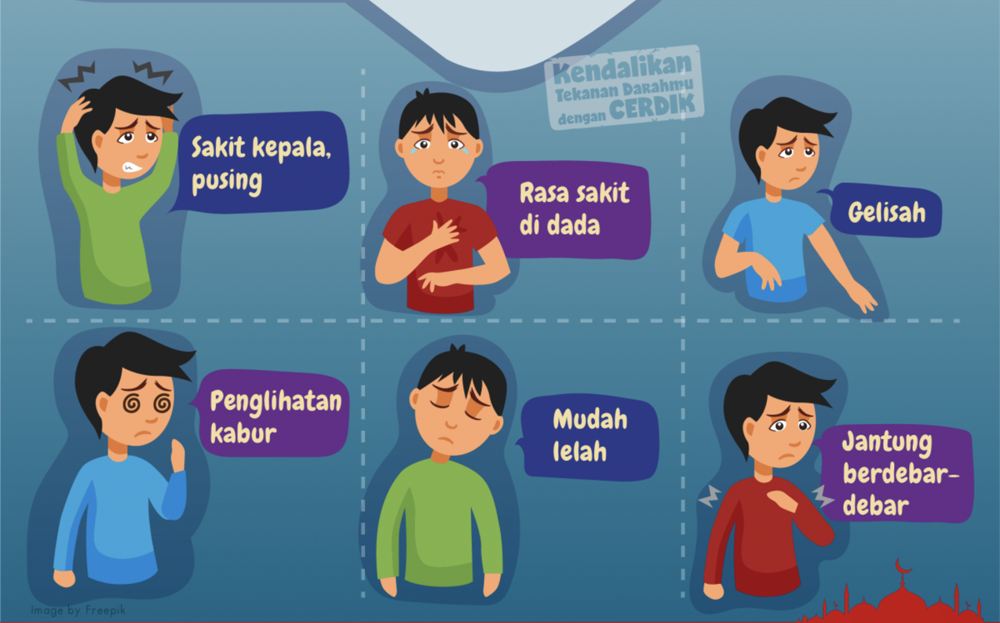
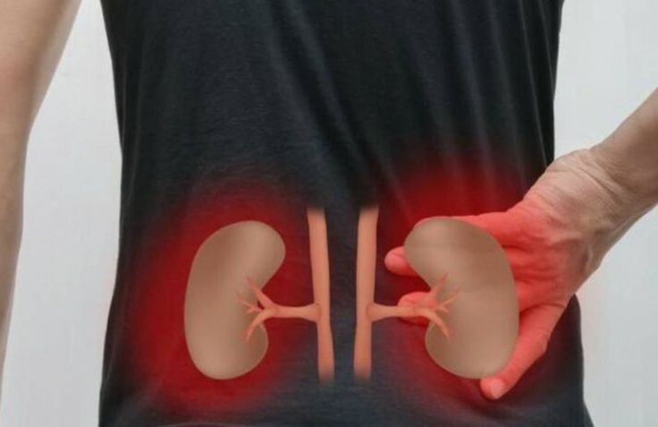

Apa itu Hipertensi?
Hipertensi didefinisikan sebagai tekanan darah sistolik lebih dari 120-139 mmHg dan tekanan darah diastolik lebih dari 80-89 mmHg. Biasanya dimulai sebagai penyakit yang ringan, perlahan berkembang ke kondisi yang parah atau berbahaya (Sahrudi dan Anam, 2021).
Klasifikasi Hipertensi
| Kategori | Sistolik (mmHg) | Diastolik (mmHg) |
|---|---|---|
| Normal | <120 | <80 |
| Prehipertensi | 120 - 139 | 80 - 89 |
| Stage I | 140 - 159 | 90 - 99 |
| Stage II | >160 | >100 |
| Hipertensi krisis | >180 | >110 |
Faktor Risiko Hipertensi
Yang Tidak Dapat Dimodifikasi:
- Umur: Dengan bertambahnya umur, risiko hipertensi meningkat akibat elastisitas pembuluh darah yang menurun.
- Jenis Kelamin: Pria lebih rentan terhadap hipertensi sebelum usia 65 tahun, sementara wanita memiliki risiko lebih tinggi setelah menopause.
- Genetik: Riwayat keluarga dengan hipertensi meningkatkan risiko seseorang untuk mengidap kondisi serupa.
Yang Dapat Dimodifikasi:
- Kegemukan (obesitas): Kelebihan berat badan meningkatkan beban kerja jantung, yang dapat menyebabkan tekanan darah tinggi.
- Merokok: Nikotin dalam rokok merusak pembuluh darah, meningkatkan tekanan darah, dan memperburuk hipertensi.
- Kurang Aktivitas Fisik: Gaya hidup sedentari menurunkan kesehatan kardiovaskular, meningkatkan risiko tekanan darah tinggi.
- Konsumsi Garam Berlebih: Garam yang berlebihan memicu retensi cairan, meningkatkan tekanan darah secara signifikan.
- Konsumsi Alkohol Berlebih: Alkohol berlebihan meningkatkan tekanan darah dan dapat merusak fungsi hati serta organ lainnya.
- Psikososial dan Stres: Tekanan emosional atau stres kronis dapat meningkatkan kadar hormon stres, yang memengaruhi tekanan darah.
Tanda dan Gejala Hipertensi
- Rasa sakit kepala, tengkuk dan leher (biasanya muncul saat bangun tidur)
- Penglihatan kabur
- Jantung berdebar-debar
- Gelisah
- Mudah lelah
Komplikasi Hipertensi

Penyakit Jantung

Gagal Ginjal
Kebutaan
Stroke
Apa itu Hipertensi Emergensi?
Hipertensi emergensi didefinisikan dengan tekanan darah sistolik ≥180 mmHg dan tekanan darah diastolik ≥110 mmHg, yang mana membutuhkan penanganan dengan segera agar tidak terjadi komplikasi.
Pencegahan Hipertensi
Cara Mengontrol Tekanan Darah dengan PATUH:
- Periksa kesehatan secara rutin dan ikuti anjuran dokter.
- Atasi penyakit dengan pengobatan yang tepat dan teratur.
- Tetap diet dengan gizi seimbang.
- Upayakan aktivitas fisik dengan aman.
- Hindari asap rokok, alkohol, dan zat karsinogenik lainnya.
Cara Mengontrol Tekanan Darah dengan CERDIK:
- Cek kesehatan secara berkala.
- Enyahkan asap rokok.
- Rajin aktivitas fisik.
- Diet seimbang.
- Istirahat cukup.
- Kelola stres.